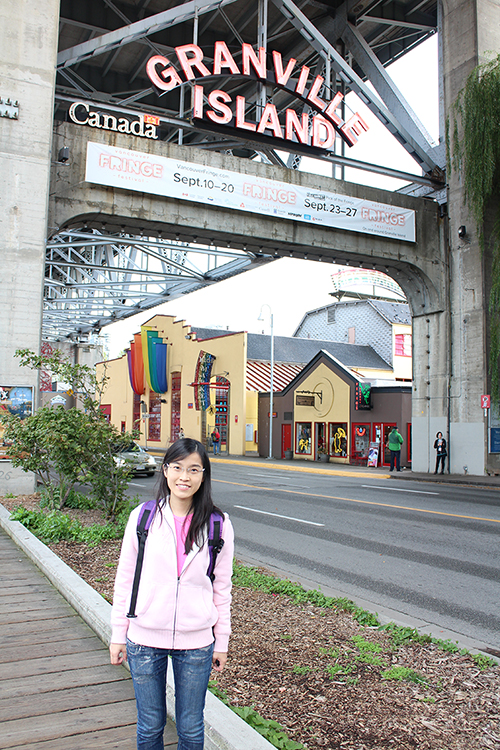

You don’t have to be great to start, but you have to start to be great. – Zig Ziglar
My name is Ming Wai, Nip. My preferred name is Esther and I come from HK. I graduated with a degree in English and Communication over ten years ago. Working as a researcher in the area of consumer psychology in the academic field, I never stop learning. We did eye tracking studies in order to study consumer behaviors and I studied how to analyze those data and how to construct more effective advertisements and menus. It is always great to be a life learner. And I believe that it is greatly important to take the first step in learning, in whatever topics.
Three years ago, I went to Vancouver to attend my sister’s wedding and for sight-seeing. I was attracted by the beautiful scenery in Canada, and this is the first time when I have thoughts about persuading my study in Canada. And it was like a year ago when I decided to step out of my comfort zone and be a full time student again. It was never easy to leave my home country to study for a long time but I believe this experience will be a memorable one. After graduation, I would like to gain more experience in the marketing and communications field, especially relating to interactive social media which will be the trend for the future.
Images
My hobbies
- Reading
- Shopping